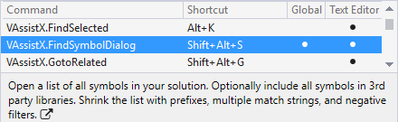

Keyboard Shortcuts
Several commands in Visual Assist have default shortcuts, but only if the shortcuts were available during installation of Visual Assist. Other commands have recommended shortcuts that overwrite defaults in Visual Studio.
Visit the shortcut dialogs in Visual Assist to learn what the default shortcuts do, evaluate the recommended shortcuts, and access a list of all commands available for assignment.

Open the shortcut dialogs via VAssistX | Help | Keyboard Shortcuts.
Learn more about shortcuts in Visual Assist.